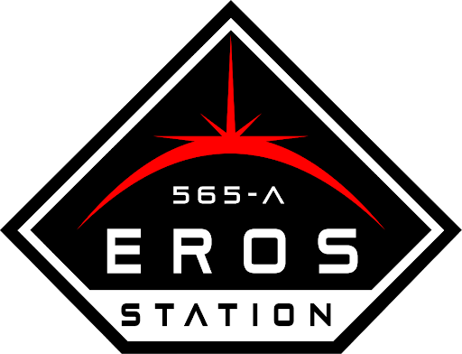

A Aliança dos Planetas Exteriores é uma organização política presente no primeiro cinturão de asteróides e nos planetas externos do Sistema Solar, eles são compostos por seres humanos denominados Belters que vivem trabalhando no espaço para sustentar o comércio interplanetário com a Terra (ONU) e Marte (MCR) .
Os Belters em toda a sua história foram um povo oprimido e castigado pelas dificuldades de viver no espaço do resto da população do Sistema Solar, agora, como organização lutam para garantir a sua liberdade como seres humanos.
Essa organização faz parte da série de televisão The Expanse (A Expansão), onde retrata a humanidade no século XXIV, em torno dos de 2340 e 2350 onde a humanidade colonizou boa parte do Sistema Solar. Existem três poderes que governam o Sistema Solar, sendo duas delas as maiores potências ONU (Organização das Nações Unidas) , que possui como mundo principal a Terra, MCR (República Congressional Marciana) , que possui Marte como seu planeta principal e a OPA citada nesse site.
Veja aonde os Belters se localizam para viver e trabalhar no Sistema Solar, dando assim sustento a outras regiões do Sistema Solar e de seus governos.